导读
设计师妍妍新系列「设计、审美与 AI 时代的创造力」第一期：她认为审美靠“浸泡”而非“学”，从几十个常刷站点里精选 10 个——Mobbin（真实产品流程）、Godly/recent.design（前沿风格）、Minimal Gallery（极简）、Refero（B 端/SaaS）、Dark Design（深色模式）、Design Spells（微动效）、Lapa Ninja（落地页 Hero）、Typewolf（字体排版）、Load More（实验网页）、Best Designs on X（X 上的设计作品），并逐个给出推荐理由与用法。结尾强调：收藏不等于审美，关键是看懂“为什么好”。以下为原文全文（保留原文措辞）。
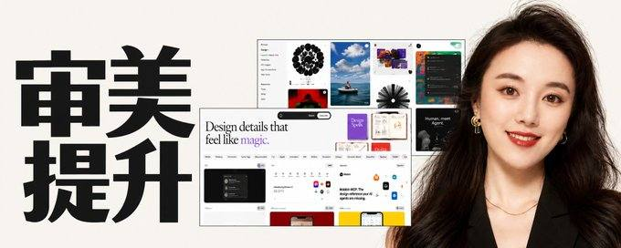
原文全文
Hello家人们，我是妍妍！
前阵子休息了一下，之后继续努力开工💪
从今天开始，我想开启一个新的系列，
和大家分享设计，审美，以及AI时代的创造力。
这里不会只聊好看的设计，也不会只拆案例。
我更想分享的是：如何培养判断力，建立自己的审美体系，
以及把好的设计真正应用到产品和创作中。
那第一期呢，我想和大家分享设计师常用的“洗眼睛”的设计资源：
设计审美这件事，本质上不是“学”，而是“浸泡”。
你每天在看什么，很大程度上决定了你会做出什么。
这几个网站，是我会反复刷的，也很适合用来建立设计判断力。
之前短推零零散散的分享过几十个，经过我长期的使用，
真正值得反复看的是这1️⃣0️⃣个！
以及我的推荐理由和使用方法~
1.Mobbin https://mobbin.com/
我工作中最常用的参考网站！
敲重点！这个网站收录的都是已经上线的真实产品界面，而不是那种好看但不能用的概念图。你可以直接看到一个功能是怎么被拆成完整流程的，比如 onboarding、支付、搜索、profile。
特别适合练一件事：不是这个界面好不好看，而是这个设计是怎么被做出来的。有时候没灵感的时候，我就随便点一个app进去看一圈，很快就有感觉了。而且会慢慢发现，很多好设计其实都很“克制”。
如果你需要做产品设计，这个一定要常刷。
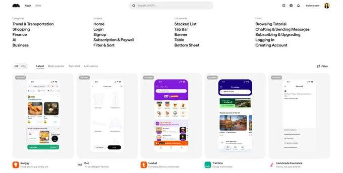
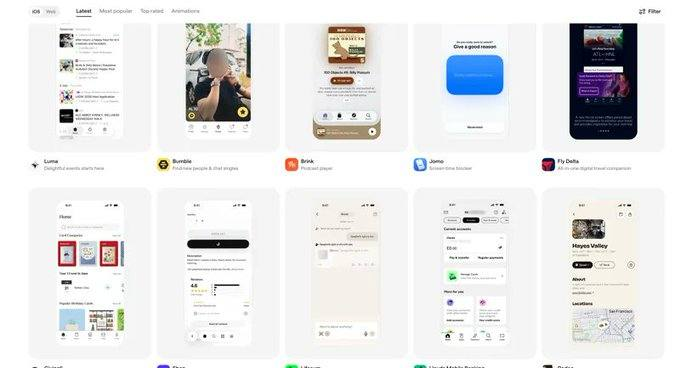
2.Godly godly.website
这个更偏“风格”和“前沿”
最近改成recent.design了，整个网站给人一种视觉实验室的感觉，充满大胆，酷炫又有创意的设计。和传统设计灵感库不同，这里很少看到千篇一律的模板化设计，更多的是突破常规的视觉语言，独特的交互方式，以及充满个性的设计表达。
如果你看腻了那些四平八稳的设计，想跳出自己的设计舒适区，或者给作品注入更多Personality，这个网站很值得逛逛！
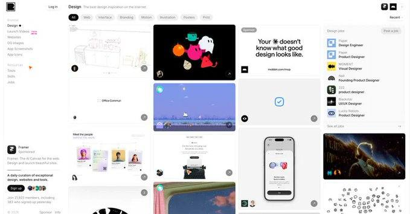
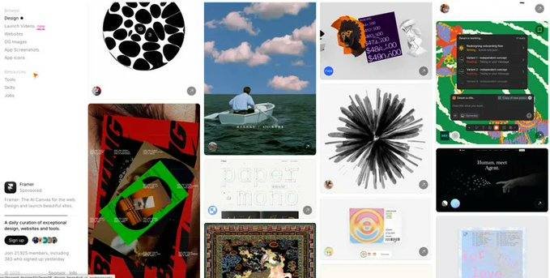
3.Minimal Gallery https://minimal.gallery
Less is More
这是我最近特别喜欢的一个设计灵感网站，主打极简主义美学。
里面的设计看起来都很简单，但越看越觉得高级。没有多余的装饰，却对比例、留白、排版和视觉节奏有着极高的要求。
我一直觉得，设计的高级感，很多时候不是来自做了多少，而是知道什么可以不做。
这个网站特别适合培养「减法设计」的审美。看多了，你会逐渐对过度设计变得敏感，开始本能地思考：这个元素真的有必要吗？这个装饰是不是可以去掉？
好的设计不只是知道如何添加，更重要的是懂得如何克制。
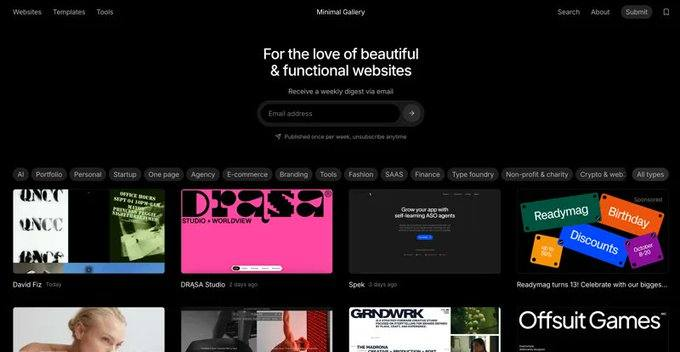
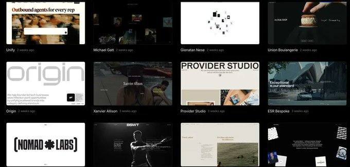
4.Refero https://refero.design/
Enterprise产品设计天花板，B 端/SaaS灵感库
如果你是做 B 端产品、Enterprise Software 或 SaaS 设计的，这个网站真的很值得收藏！
这里能看到很多成熟产品的设计案例，没有太多花哨的视觉效果，更多的是克制、清晰、有逻辑的设计语言。
这类设计往往不是第一眼就让人惊艳，但越看越觉得舒服合理。尤其是复杂信息的组织、功能层级的处理，以及如何在高信息密度下保持界面的清晰和易用，都非常值得学习。
B 端设计的难点，从来不是把界面做得多漂亮，而是把复杂的事情设计得足够简单。
有时候你会发现，真正的高级感不是靠不断添加设计细节堆出来的，而是来自对复杂度的精准控制。
好的设计，让复杂留在系统里，让简单留给用户。
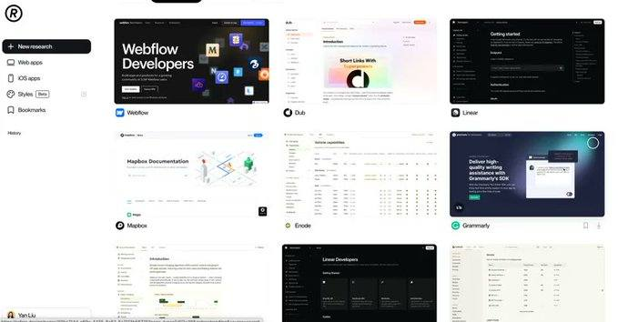
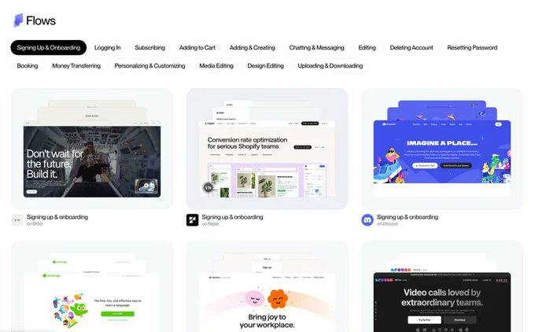
5.Dark design https://www.dark.design/
暗黑美学，Dark Mode
这是一个专门收录优秀深色模式网站和产品设计的灵感库，很有趣！
Dark Mode 看似只是把背景变黑，但真正做好其实很考验设计功底。如何处理对比度、视觉层级、色彩搭配和光影关系，才能让界面既有质感，又不显得沉闷、杂乱？
这个网站收录了很多不同风格的深色设计案例，从极简克制到大胆前卫，可以看到不同品牌如何在有限的明暗关系中创造视觉张力。
深色设计的高级感，不是把所有东西变暗，而是知道如何让重要的东西亮起来。
如果你正在做 Dark Mode，或者想提升自己对色彩、对比度和视觉层次的把控，这个网站很值得收藏！
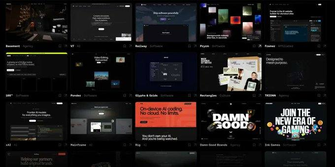
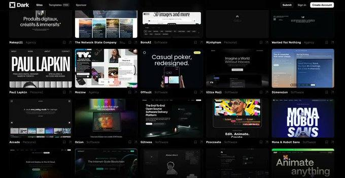
6.Design spells https://designspells.com
设计中的动效细节超棒！
这个网站专治缺少灵魂的 UI！
收集那些让人眼前一亮的交互细节，微动效和充满巧思的设计瞬间。
和传统设计灵感库不同，它关注的是那些很容易被忽略，却能让体验瞬间变得生动的小细节。比如按钮的反馈、页面切换、Hover 状态，以及各种意想不到的交互彩蛋。很多设计单独看可能只是一个很小的动画，但就是这些细节，让产品从「能用」变成「好用又有趣」。
好的动效不是为了炫技，而是让交互变得更自然，让产品拥有自己的性格。
如果你想提升产品的精致感，或者让自己的 UI 少一点机械感、多一点 Delight，这个网站真的值得反复逛！
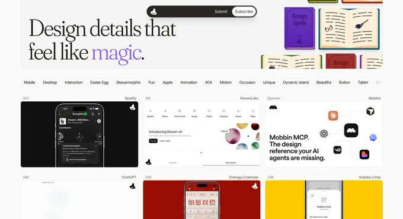
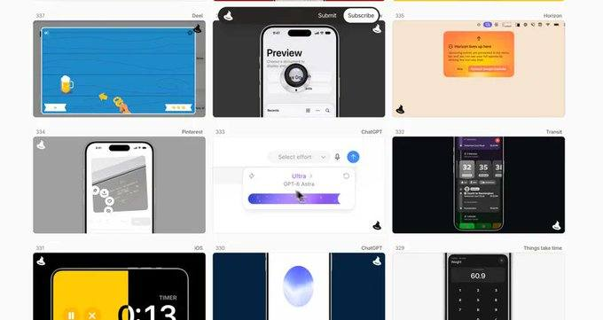
7.Lapa Ninja https://lapa.ninja
Landing Page灵感库
Hero区设计非常强，如果你经常需要设计产品官网，Landing Page或个人作品集，这个网站真的非常实用！
它收录了大量优秀的落地页设计，尤其值得参考的是首屏 Hero Section。无论是大胆的字体排版、视觉与文案的组合，还是 CTA 的布局和信息层级，都能找到很多成熟又有创意的案例。
我觉得 Landing Page 设计最有意思的地方在于，如何在短短几秒内，让用户知道你是谁、你提供什么价值，以及为什么值得继续看下去。
好的首屏设计不只是视觉惊艳，更需要在品牌表达、信息传递和转化之间找到平衡。
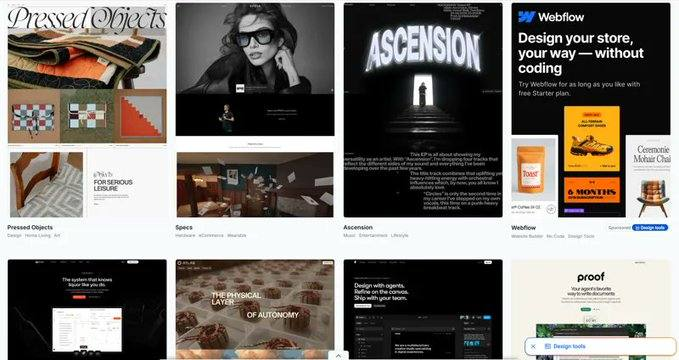
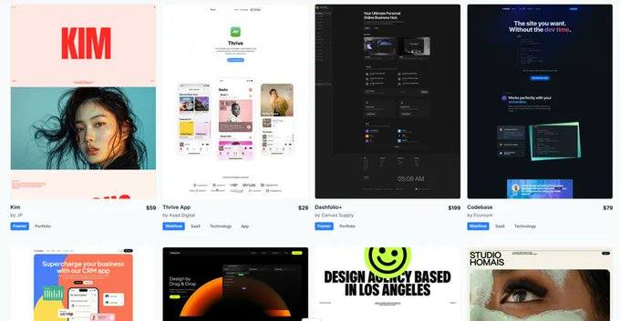
8.Typewolf https://www.typewolf.com/
字体排版美学天花板
专门研究优秀网站的 Typography 和字体搭配。我只能说，太美了！！
很多时候我们觉得一个设计很高级，却说不清高级在哪里。其实除了色彩和布局，字体的选择、字号的对比、字重、行距以及文字之间的节奏，都在悄悄影响整个设计的气质。
Typewolf 最值得学习的地方，就是让你看到字体如何成为设计的主角。哪怕没有复杂的插画和动效，仅仅通过 Typography，就能创造出极具辨识度的视觉语言。
字体不只是信息的载体，它本身就是设计。
很多时候，高级感不是加出来的，而是排出来的。
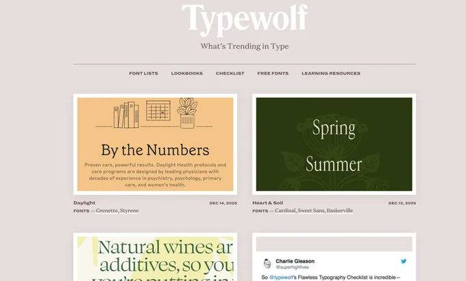
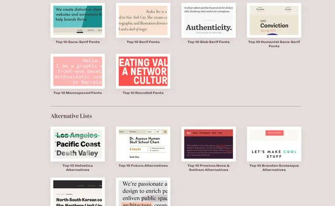
9.Load more http://loadmo.re
本次推荐脑洞最大的网站！
如果说前面推荐的网站更多是在追求精致，克制和实用，那这个网站就是抽象和彻底放飞想象力😂
这里收录了大量实验性，先锋感十足的网页设计，视觉语言非常大胆，从打破常规的排版，夸张的字体，到充满创意的交互和视觉效果，很多作品都让人忍不住感叹：原来网页还能这样设计！
它不一定适合直接拿来做商业产品，但特别适合打开思路，挑战自己对「好设计」的固有认知。
有时候限制设计创造力的，不是能力，而是我们对设计应该长什么样的想象。
如果你觉得自己的设计越来越四平八稳，或者陷入了千篇一律的 UI 风格，不妨来这里逛逛，给大脑来一场视觉冲击！
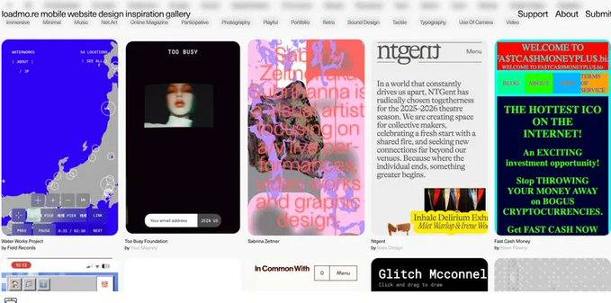
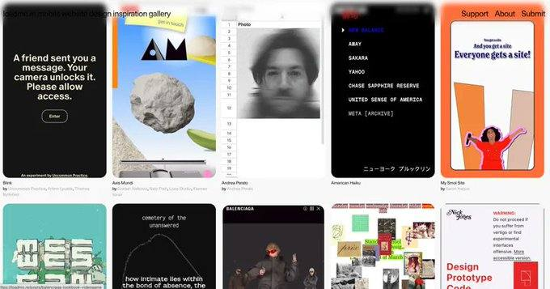
10.Best Designs on X https://bestdesignsonx.com/
收录X上最酷的设计！
不知道是哪个天才想出来的，居然专门做了一个网站，收集 X上那些让人眼前一亮的设计作品！
平时刷 X 经常会看到设计师分享各种惊艳的 UI，交互动效，视觉实验和 Side Projects，但信息流刷过去就很难再找到了。这个网站相当于把散落在 X 上的设计宝藏整理成了一个灵感库！
比起传统的设计作品展示平台，这里的作品更有一种鲜活的实验感。很多都是独立设计师的创意探索，不一定是完整的商业项目，却充满了新鲜的想法和有趣的细节。
我一直觉得，最有意思的设计灵感，往往不在精心包装的 Case Study 里，而在设计师日常那些大胆又随性的实验中。而且更好的是，可以直接一键回到X的对应post，找到作者，可以探索更多好东西~
如果你平时也喜欢在 X 上挖掘设计灵感，这个网站简直就是快乐老家！
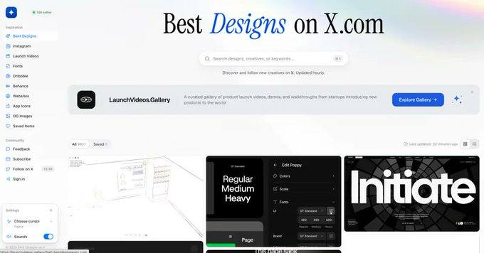
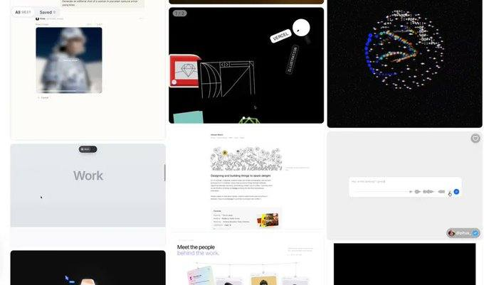
好啦，以上就是这次想分享的 10 个私藏设计灵感网站！
从极简美学、字体排版，到交互动效、前沿视觉和产品设计，希望能给大家带来一些新的灵感！
但其实我一直觉得，收藏再多的设计网站，也不等于拥有好的审美。
真正重要的不是看过多少好设计，而是能不能看懂它为什么好，以及如何把这些观察慢慢转化成自己的审美判断。
审美不是天赋，而是一种可以通过长期观察，思考和练习培养的能力。
所以下一期想和大家聊聊一个更有意思的话题：
「普通人如何系统地提升审美？」
不需要设计专业背景，我会分享一些自己这些年积累的审美训练方法。
希望我们不只是越来越会收藏美，也能越来越懂得欣赏美创造美。✨
如果你也有私藏的宝藏设计网站，欢迎评论区分享呀！
作者在评论区的补充
- 首条自回复：“新系列来啦！重新支棱起来写长文💪 和大家分享设计，审美，以及AI时代的创造力”
- 回答“怎么挑参考”：“先看你的产品是2B还是2C的？视觉更重要还是功能性更重要？先解答这俩问题就好挑了”
- 提到自己之前做过类似产品 design lab（收录不够全，打算更新），并认为“市面上那几个 taste 点 skill 啥的都不怎么好用”。